1.3. Adding 2D Forming operations
1.5. Assigning Material for Workpiece
1.16. Post-Processing the Results
1.17. Remarks on tool life evaluations
This lab will demonstrate how to set up the model data for tool wear computations in a typical cold extrusion process. The objective is to understand the tool wear behavior of extrusion die. Tool wear is mainly dictated by process conditions and the materials used. This model illustration assumes that the coefficients used have been calibrated under steady wear conditions for a given process involving a set of die and work piece materials. These coefficients should be used with caution and for qualitative evaluation only when applied to any other process or material conditions. Currently DEFORM® system has Archard’s model and Usui’s model apart from the user routine support. Typically Archard’s model is widely used for forming applications and Usui’s model is used for machining applications to compute insert wear.
Archard’s model can be used with either isothermal or non-isothermal runs. On the other hand, Usui’s model can only be used in non-isothermal mode, as it requires interface temperature calculations as well. For both of these models the die (or insert, in case of machining) should be meshed, with appropriate boundary conditions and inter-object relations defined. This lab will glance through the complete problem setup with emphasis on tool wear part of the data and assumes user is familiar with the typical problem setup procedures.
On a Windows machine, go to the  button select DEFORM-v1x.xxx (.xxx indicates version number E.g. v14.0.2)
and select DEFORM GUI Main vxx.xx from the menu. The DEFORM GUI Main window will appear, as shown below Fig. 2DTWL1.1.)
button select DEFORM-v1x.xxx (.xxx indicates version number E.g. v14.0.2)
and select DEFORM GUI Main vxx.xx from the menu. The DEFORM GUI Main window will appear, as shown below Fig. 2DTWL1.1.)
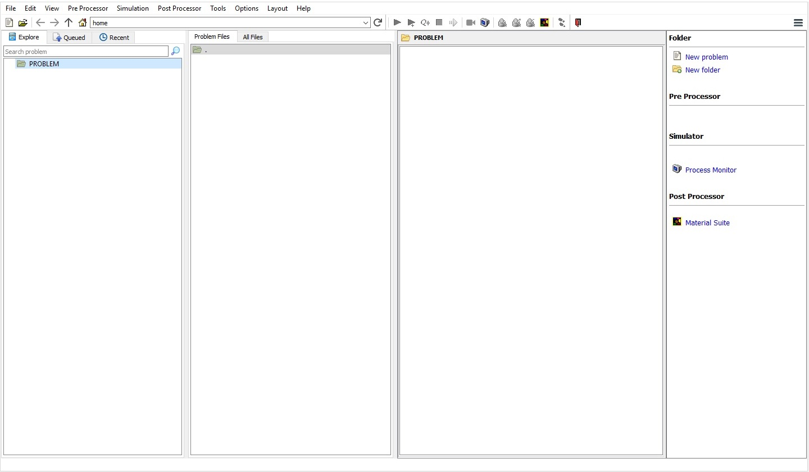
DEFORM GUI main window
Create a new problem either by selecting File  New Problem or by clicking the New Problem
New Problem or by clicking the New Problem  icon. The Problem Setup window will appear as shown in Fig. 2DTWL1.2. Select " Integrated Manufacturing Process"
radio button and units system as "English" radio button in units field. Define Problem Name as "Extrusion_Die_Wear" and make sure the “Show option dialog”
check box is turned on (if we do not turn on the “Show option dialog” check box, then we will not get the New Project dialog). Then click on
icon. The Problem Setup window will appear as shown in Fig. 2DTWL1.2. Select " Integrated Manufacturing Process"
radio button and units system as "English" radio button in units field. Define Problem Name as "Extrusion_Die_Wear" and make sure the “Show option dialog”
check box is turned on (if we do not turn on the “Show option dialog” check box, then we will not get the New Project dialog). Then click on  button to open a
new problem using the Deform Integrated Manufacturing Process.
button to open a
new problem using the Deform Integrated Manufacturing Process.
Problem type selection window
MO wizard will open along with project naming window, defined problem name is updated as ‘Extrusion_Die_Wear’ as the project name and selected unit system updated. Click on  to add project.
to add project.
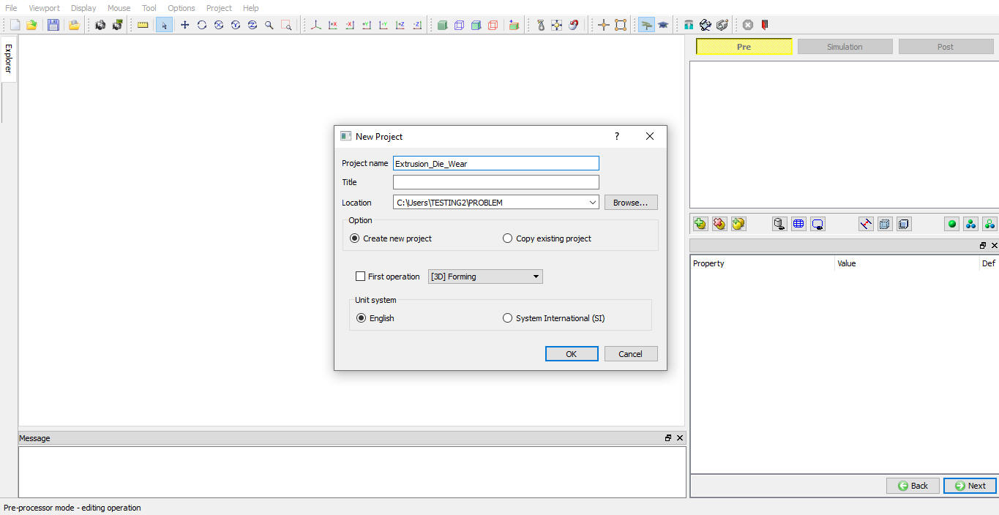
Problem Location selection window
Multiple Operation wizard will opens with new project called Extrusion_Die_Wear to setup the problem. Add 2D Forming operations from Operations list in Explorer. Operation can be added by clicking on  button next to 2D Forming operation ( see Fig. 2DTWL1.4.) or user can also add the operation by
dragging and dropping the operation into Operation Editor region.
button next to 2D Forming operation ( see Fig. 2DTWL1.4.) or user can also add the operation by
dragging and dropping the operation into Operation Editor region.
Added 2D Forming operation into Operation Editor
In this lab we will be using Axisymmetric geometries, So select 2D Axisymmetric radio button from geometry type page and click on  until Material page. (see Fig. 2DTWL1.5.)
until Material page. (see Fig. 2DTWL1.5.)
2D Axisymmetric Geometry type selection
In Material list window, Load the materials 'AISI-1035, COLD' and 'AISI-D2, COLD' from DEFORM Material library using  (Load material data from library) option (see Fig. 2DTWL1.6.). Click on
(Load material data from library) option (see Fig. 2DTWL1.6.). Click on  until object page.
until object page.
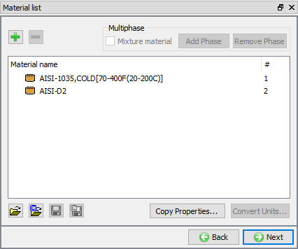
Material List window
For this operation we required three objects, Now by default three objects will be added in Object window. If no objects added in Object window, then add three objects by clicking three times on  button (see Fig. 2DTWL1.7.) and click on
button (see Fig. 2DTWL1.7.) and click on  .
.
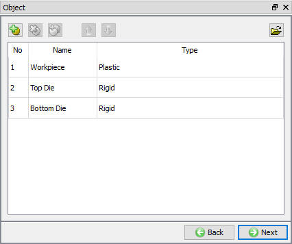
Adding Object Window
In Workpiece window, select Object type as Plastic as shown in Fig. 2DTWL1.8. Click on  .
.
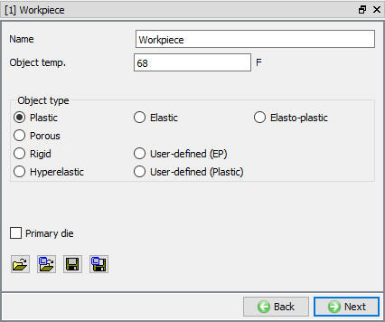
Workpiece object Window
In Geometry window, load Tool_Wear_Lab1_Workpiece.GEO geometry file from library using  (Load geometry from library) option or can also be imported using
(Load geometry from library) option or can also be imported using
 (Load geometry from a file) option as shown in Fig. 2DTWL1.9.,
the geometry is located in DEFORM installation folder \2D\LABS directory.
(Load geometry from a file) option as shown in Fig. 2DTWL1.9.,
the geometry is located in DEFORM installation folder \2D\LABS directory.
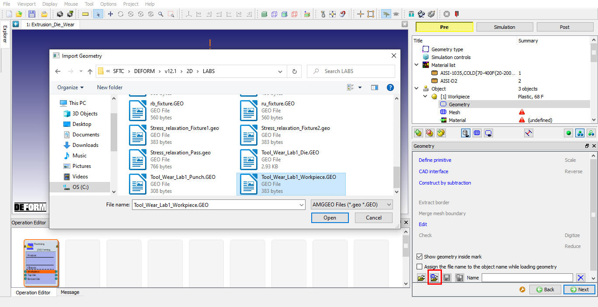
Defining the Geometry
Define 2000 elements for the mesh settings and Click on  to generate the mesh (see Fig. 2DTWL1.10.).
to generate the mesh (see Fig. 2DTWL1.10.).
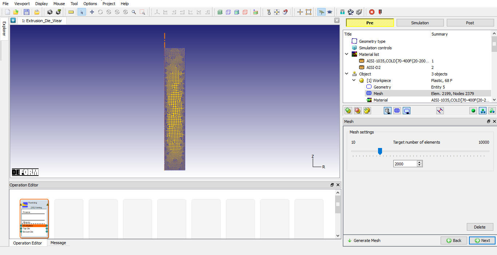
Workpiece Mesh window
To assign material for workpiece select the material 'AISI-1035, COLD' from material window. This can be done as shown in below Fig. 2DTWL1.11. Click on  .
.
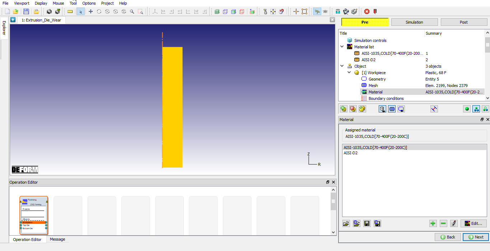
Assigning Workpiece material
In BCC page, check the default assigned Deformation BCC for Left side of the workpiece in X-Direction, default BCC are assigned automatically due to selection of problem type as axisymmetric (see Fig. 2DTWL1.12.).
Then click on  until Top die page.
until Top die page.
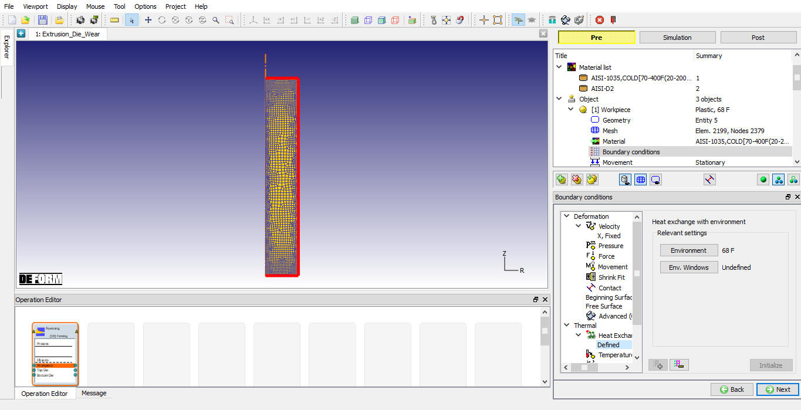
Workpiece BCC page
In Top die page, select Object type as Rigid and Turn on Primary die check box as Top die will have movement definition assigned to it ( see Fig. 2DTWL1.13.)
, click on  .
.
Top die page
In Geometry window, load Tool_Wear_Lab1_Punch.GEO geometry file from library using  (Load geometry from library) option or can also be imported using
(Load geometry from library) option or can also be imported using  (Load geometry from a file) option as shown in Fig. 2DTWL1.14..The
geometry is located in DEFORM installation folder \2D\LABS directory. Check the geometry using
(Load geometry from a file) option as shown in Fig. 2DTWL1.14..The
geometry is located in DEFORM installation folder \2D\LABS directory. Check the geometry using  option to make sure the geometry is OK. Then click on
option to make sure the geometry is OK. Then click on  until Top die movement page.
until Top die movement page.
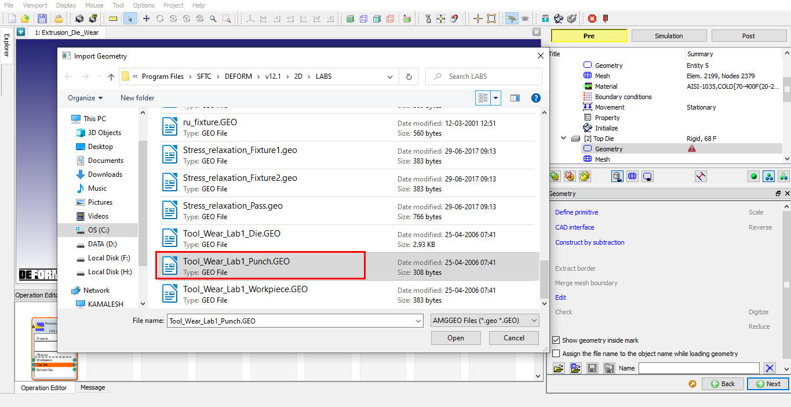
Top Die Geometry page
As we are not performing any tool wear computations on the top die, it is not required to have any mesh in this model.
Define a speed of 11.5 in/sec in -Y direction for this lab (see Fig. 2DTWL1.15.).
Then click on  until Bottom Die page.
until Bottom Die page.
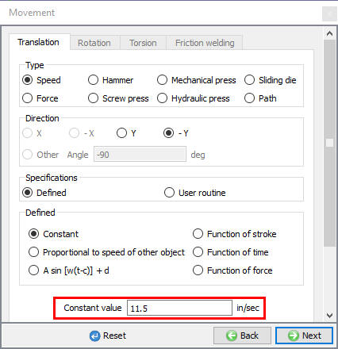
Top die Movement page
In Bottom die page select Object type as Rigid and click on  (see Fig. 2DTWL1.16.).
(see Fig. 2DTWL1.16.).
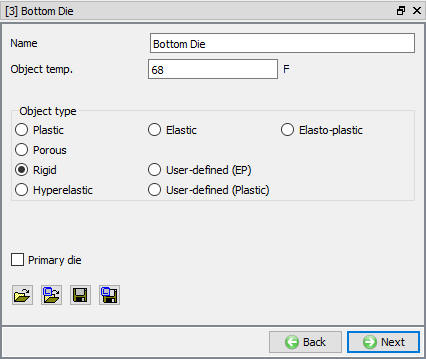
Bottom Die page
In Geometry window, load Tool_Wear_Lab1_Die.GEO geometry file from library using  (Load geometry from library) option or can also be imported using
(Load geometry from library) option or can also be imported using  (Load geometry from a file) option. The geometry is located in DEFORM installation folder \2D\LABS directory. Check the geometry using
(Load geometry from a file) option. The geometry is located in DEFORM installation folder \2D\LABS directory. Check the geometry using  option to make sure the geometry is OK.
Then click on
option to make sure the geometry is OK.
Then click on  .
.
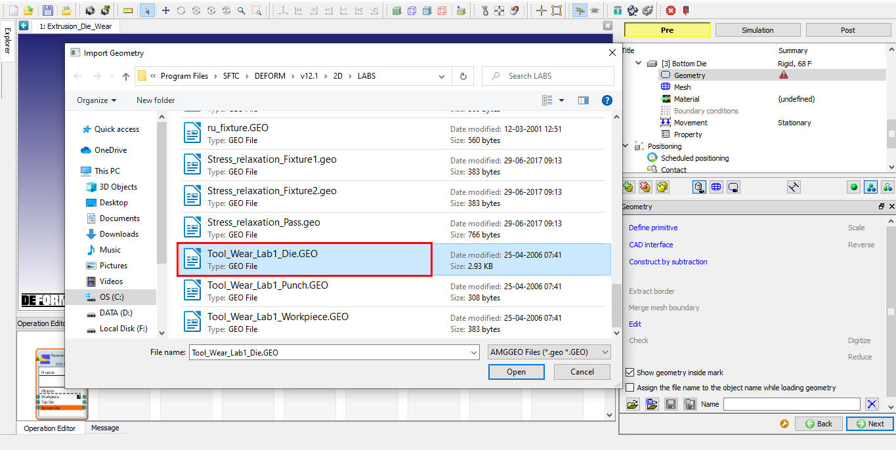
Bottom Die Geometry Page
Set the target number of elements to 1500 and generate mesh by clicking  button. (see Fig. 2DTWL1.18.)
button. (see Fig. 2DTWL1.18.)
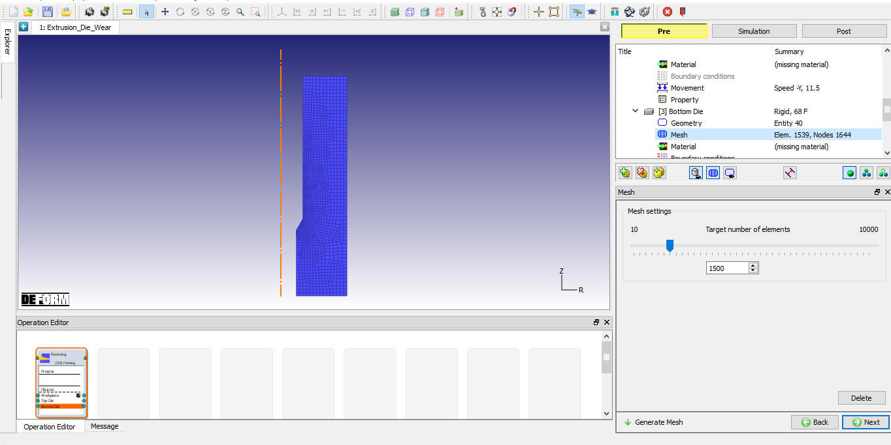
Bottom Die Mesh page
Assign AISI-D2 material for Bottom die by selecting AISI-D2 in Material list as shown in Fig. 2DTWL1.19. then
click on  .
.
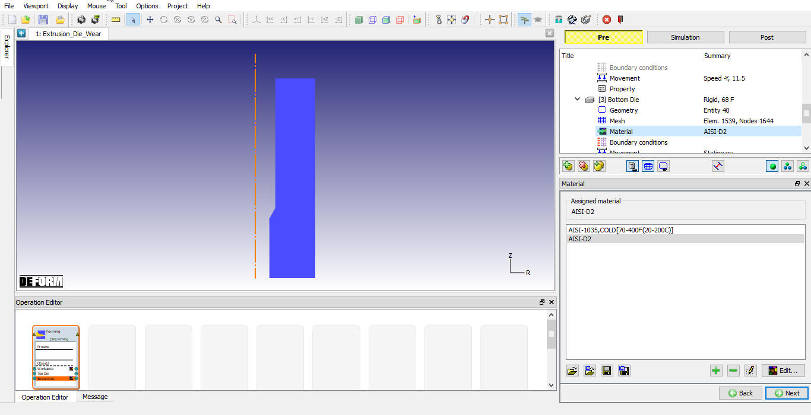
Bottom Die Material page
For tool wear analysis material hardness is an important parameter for the Bottom die. Select  icon to open Element Data page. Select the ‘Hardness’ option and
initialize the element hardness data as 55 (see Fig. 2DTWL1.20.). This value is a typical hardness value
in Rockwell-C scale for die steel (as hardened condition).
icon to open Element Data page. Select the ‘Hardness’ option and
initialize the element hardness data as 55 (see Fig. 2DTWL1.20.). This value is a typical hardness value
in Rockwell-C scale for die steel (as hardened condition).
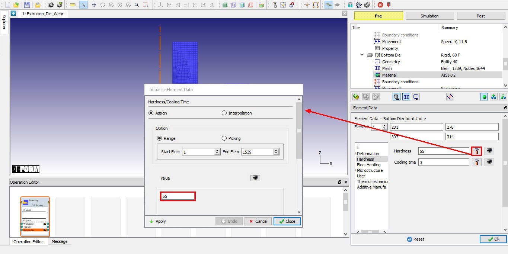
Defining Material Hardness
Check the default assigned Heat exchange with Environment BCC for Bottom Die and make sure that default assigned Heat Exchange with Environment BCC is assigned to the entire outer surface of the Bottom die (see Fig. 2DTWL1.21.).
Then click on  until Controls page.
until Controls page.
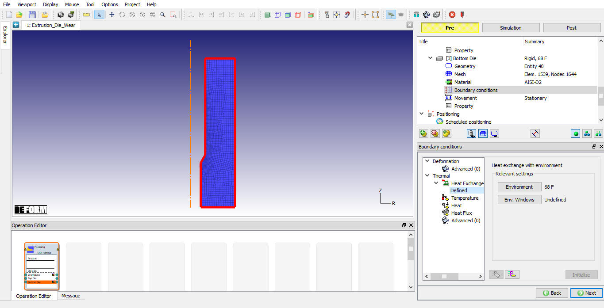
Bottom Die BCC page
Positioning of the objects is not required in this lab as the imported geometries are already in the correct place.
In contact page, we will define friction and heat transfer coefficients for a pair of master-slave objects. Click on  to generate default inter-object
relations. Default relations will be added as shown in Fig. 2DTWL1.22, now select the Top Die - Workpiece relation
and click on
to generate default inter-object
relations. Default relations will be added as shown in Fig. 2DTWL1.22, now select the Top Die - Workpiece relation
and click on  to set the interface shear friction as 0.08 and interface heat transfer coefficient as
0.002. Click on
to set the interface shear friction as 0.08 and interface heat transfer coefficient as
0.002. Click on to close Inter-object data definition window and select the option
to close Inter-object data definition window and select the option  so that same interface conditions are also applied for the Bottom Die and Workpiece relation. Use
so that same interface conditions are also applied for the Bottom Die and Workpiece relation. Use  icon to determine a suitable contact tolerance and click on
icon to determine a suitable contact tolerance and click on  option to generate the inter object contact relations. Highlighted nodes indicate the contact nodes between objects.
option to generate the inter object contact relations. Highlighted nodes indicate the contact nodes between objects.
In
this lab, we will be estimating tool wear on Bottom Die, hence select the Bottom Die - Workpiece relation and click on  to define Tool wear data for this pair, scroll to the right (beyond the ‘Friction Window’) option and click on ‘Tool Wear’ tab as shown in the Fig. 2DTWL1.22 below.
Select Archard’s model and input coefficients a = 1, b = 1, c = 2 and k = 0.00001. Please note that these are only some typical values that can be obtained from the literature and user is responsible for accuracy of this data (see
Fig. 2DTWL1.22). Click on
to define Tool wear data for this pair, scroll to the right (beyond the ‘Friction Window’) option and click on ‘Tool Wear’ tab as shown in the Fig. 2DTWL1.22 below.
Select Archard’s model and input coefficients a = 1, b = 1, c = 2 and k = 0.00001. Please note that these are only some typical values that can be obtained from the literature and user is responsible for accuracy of this data (see
Fig. 2DTWL1.22). Click on  to close this window and click on
to close this window and click on  to Stopping controls page.
to Stopping controls page.
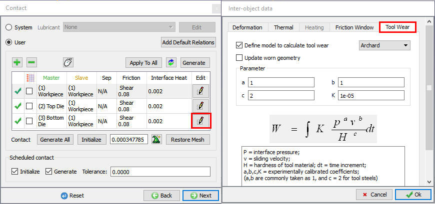
Contact generation
Under stopping controls, define the Max primary die stroke as 2 in -Y direction.(see Fig. 2DTWL1.23.)
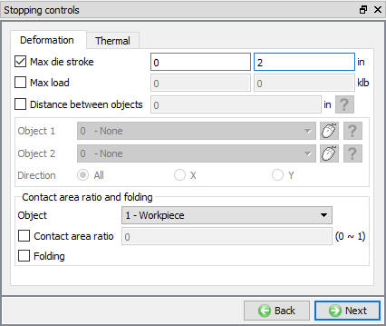
Defining Stopping Controls
When we enter the step controls, select  icon to go to Expert mode. Select
icon to go to Expert mode. Select  tab and
specify 150 for total number of steps and save every 10 steps as shown in Fig. 2DTWL1.24.)
tab and
specify 150 for total number of steps and save every 10 steps as shown in Fig. 2DTWL1.24.)
Select  tab and define punch stroke per step (DSMAX) as 0.02 in/step (see Fig. 2DTWL1.25.).
tab and define punch stroke per step (DSMAX) as 0.02 in/step (see Fig. 2DTWL1.25.).
Select Remesh criteria  tab and Specify ‘Remesh Criteria’ of 20 steps for the work piece
(see Fig. 2DTWL1.26.).
tab and Specify ‘Remesh Criteria’ of 20 steps for the work piece
(see Fig. 2DTWL1.26.).
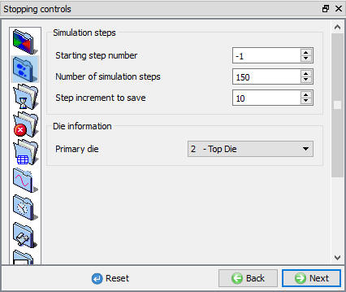
Defining Number of steps
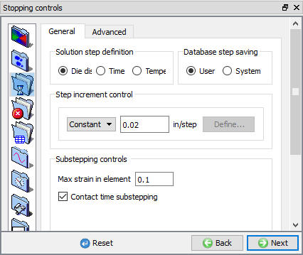
Defining step Increment
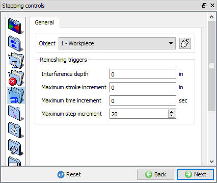
Defining Remesh Criteria
Once the problem has been completely set up, the last step is to generate a database file. The FEM engine (the part of DEFORM that calculates the solution) uses a database file to store the finite element solutions for the problem. When you generate a database in the DEFORM MO Pre-processor, all of the information defined in the Pre-processor (such as the material properties, movement controls, object geometries, etc.) is transferred to the database file.
In Generate DB page. Click the  button to have the program check to see if anything was missed in the problem setup. During the checking process:
button to have the program check to see if anything was missed in the problem setup. During the checking process:
Messages in the red color signify data that needs to be fixed before a simulation can be run (such as when you forget to define any material data).
Click on  button to generate the database. When the program is done writing the database, click on
button to generate the database. When the program is done writing the database, click on  tab to run simulation.
tab to run simulation.
Click on the  action label to open the Run Options dialog as shown in Fig. 2DTWL1.27. Use the default Continue Run option to select “Continue from the last step” option and then select the Simulation mode as Interactive and click on
action label to open the Run Options dialog as shown in Fig. 2DTWL1.27. Use the default Continue Run option to select “Continue from the last step” option and then select the Simulation mode as Interactive and click on  button to run the simulation.
button to run the simulation.
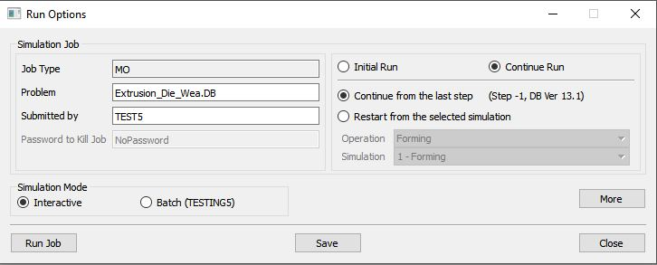
Run Simulation window
The progress of the simulation can be monitored as it is running by looking at the Simulation Message and Simulation Graphics in Simulation mode. Click the Simulation Message tab to view the Message file. As long as the  option is checked, which is the default setting, the Message file will refresh every couple of seconds.
option is checked, which is the default setting, the Message file will refresh every couple of seconds.
The Message file provides information about which simulation step the simulation is currently on and also gives information dealing with how well the simulation is running.
After simulation has been completed, click on  tab, MO post processor will open. (See Fig. 2DTWL1.28.)
tab, MO post processor will open. (See Fig. 2DTWL1.28.)
Tool wear results can be viewed in post processing as follows. Select the last step of the database and click on the state variable  icon. select the Analysis Icon
to open the Tool wear state variables list, from the list of state variables select Tool Wear, and pick ‘Wear Depth (Total)’ and set display option to solid and scaling option to local. Click on
icon. select the Analysis Icon
to open the Tool wear state variables list, from the list of state variables select Tool Wear, and pick ‘Wear Depth (Total)’ and set display option to solid and scaling option to local. Click on  to plot the same. Zoom the region of interface between Die and Workpiece. Right click on the color bar and set the number of significant digits to 6. The plot displays the wear depth (inches) contours at the end of the process for one part (see
Fig. 2DTWL1.28.).
to plot the same. Zoom the region of interface between Die and Workpiece. Right click on the color bar and set the number of significant digits to 6. The plot displays the wear depth (inches) contours at the end of the process for one part (see
Fig. 2DTWL1.28.).
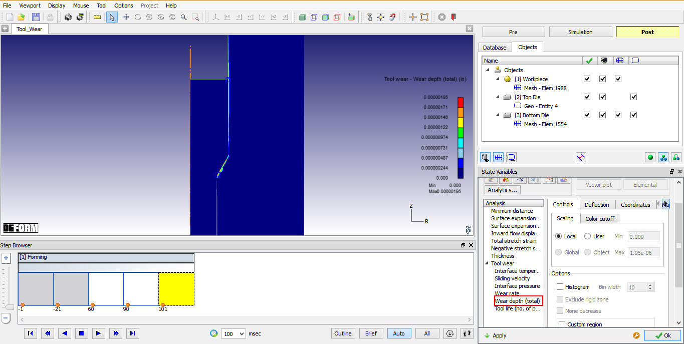
Post processing Tool wear models
Given the criteria for tool life as a specific wear depth (dictated by the allowable variations in the part dimensions), and wear depth simulated for one part, the tool life in terms of total number of parts produced can be computed. It should be noted that the model results are dictated by the coefficients used in the wear model. Hence these wear model (Archard’s) coefficients (see Fig. 2DTWL1.22.) must be accurately calibrated for a given process and set of materials used.